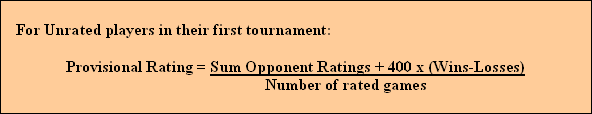
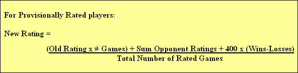
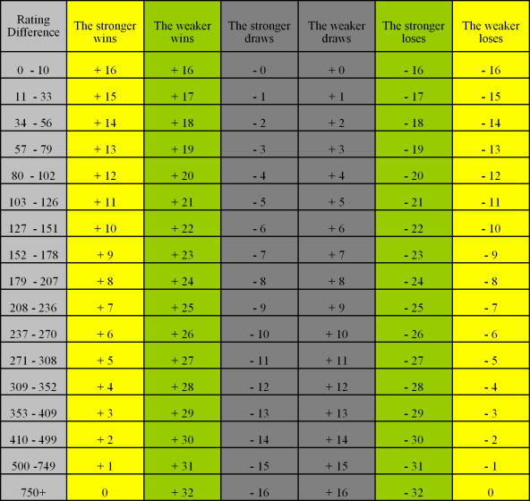

New Zealand Chess Federation (NZCF) Ratings
Posted 10 Jan 2014
Download the latest NZCF ratings lists from the NZCF website >>
NZCF Ratings
Why does NCC have different ratings to NZCF?
Posted 10 Jan 2014
Some of our players do not compete in the larger, nationally rated events, but they like to keep tabs on their playing strength. With our internal ratings they can do just that.
The NZCF ratings now appear three times a year. But there can be a delay between games played and the new ratings appearing.
With our own ratings we can release a new rating list after each event. Members can check out their new ratings online a day or two after the event for immediate gratification (or not!).
How do we rate our players?
Posted 10 Jan 2014
Blitz Ratings
Blitz games are timed at less than 30 minutes per player per game.
If a player is unrated at Blitz, we use a simple formula to assign them a Provisional Blitz rating. Provisional Blitz ratings persist until
12 games have been completed against fully rated opponents.
After these 12 rated games have been completed, a provisional rating loses it's provisional status and becomes a full NCC Blitz rating.
The formulae we use to calculate provisional ratings are:


Players competing against Unrated or Provisionally rated players do not have their rating adjusted. The game is considered "unrated" as far as they are concerned.
If a player has a NZCF Rapid rating, we will use that as their NCC Blitz rating.
Players with full NCC Blitz ratings have their rating adjusted using the Swedish rating system, where the difference in rating between two fully rated players and the
result dictate how many rating points a player gains or loses for each game rated.
This table shows how full NCC Blitz ratings are recalculated after each game:

Standard Ratings
Standard games are played at 30 minutes or more per player per game.
NCC Standard ratings are calculated using the USCF rating system.
If a player has no Standard rating, we use the same formulae as detailed above in the Blitz section to calculate a players Provisional Standard rating.
Provisional Standard ratings are calculated differently from full Standard ratings to allow a "normalization" of the rating, which occurs after several games.
If a player has a NZCF standard rating, we will use that as their Provisional Standard rating and credit 6 games towards a full standard rating.
Full Standard ratings are adjusted by calculating the win/loss probability (based on the difference between the players' ratings) vs. actual result.
Rating Floors
At no time shall any player's NCC rating descend below 500 points. This is considered the absolute minimum rating a player may have if they are able to competently play the game of chess.